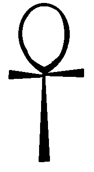

Tudengikood: 223438
Täpsemalt on see tagasiside ühele küsimusele Taltech õppeaine "Sissejuhatus infotehnoloogiasse" esimese nädala kontrolltöös, kus küsiti egiptuse hieroglüüfi 'ankh' koodi unicode kümnendsüsteemis.
Tõtt-öelda olin natuke kimbatuses, kas teha selle veebilehe sisu 'ankh'-i teemal või aegunud/taunitavate (ingl. k 'deprecated') HTML tag'ide kasutusest. Sestap väike viide ühele sellisele veebilehe lõpus. Aga kuna ma juba nägin ränka vaeva 'ankh'-i joonistamisega Paintis, siis jäi sedapuhku 'ankh' peale ja põhisisu keskendub sellele.
Siinkohal palun kõigi lugejate ees vabandust, et peab sellist õudust oma silmaga nägema. Aga kuna minu arvutis oli olemas Paint, mida Microsofti insenerid pidasid ohutuks minule kättesaadavaks teha, siis ma eeldan, et ma väga suurt kahju ei tekitanud. Niisiis, 'ankh' võiks näha välja umbes selline (veelkord palun vabandust):
Tulles nüüd aga tagasiside juurde, siis tegelikult on egiptuse hieroglüüfil 'ankh' unicode kümnendsüsteemis suisa kaks koodi! Tõsi, ühele on pandud nimeks 'ANKH' ja teisele 'EGYPTIAN HIEROGLYPH S034'. Vot nii. Otsustagu nüüd igaüks ise, kumb neist on õigem 'ankh'.
| Väljanägemine: | ☥ | 𓋹 |
| Unicode nimetus: | ANKH | EGYPTIAN HIEROGLYPH S034 |
| Unicode kood kümnendsüsteemis: | 9765 | 78585 |